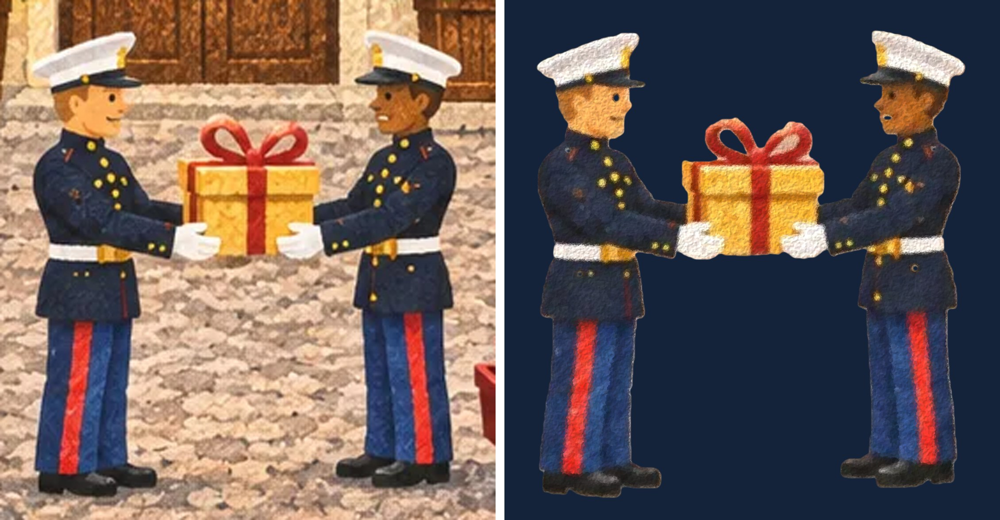

Toy Town · traced from your reference · repainted with the map's brush · rigged
The Marines walk, hand over a present and talk
A 24-second loop: one Marine walks in, they talk, the present is lifted and passed across, and he turns and carries it away. Heads nod and blink, mouths move with the words, and arms hinge at the elbow.
The voice uses your browser's built-in speech, a placeholder until we choose real voices. Captions always show.
How it works
Traced and repainted: both figures are cut from your reference and repainted dab by dab with the map's brush.
Cut into hinged parts: each Marine is a head (hinged at the neck), a forearm (hinged at the elbow), two legs (hinged at the hip, under the coat) and a body. The present is a part of its own.
Hidden areas painted in: the coat behind each forearm and the corners of the present behind the gloves did not exist in the picture. They were filled from the surrounding paint and brushed over, so nothing shows a hole when the arms move.
Eyes: now an almond white with a coloured iris, pupil, catchlight, lids and brow. Each Marine looks toward the other, and they blink.
Walking: the legs swing at the hip with a small bob. Turning around flips the figure with a quick squash, like a toy being turned.

Left: your reference. Right: traced and repainted with our brush.